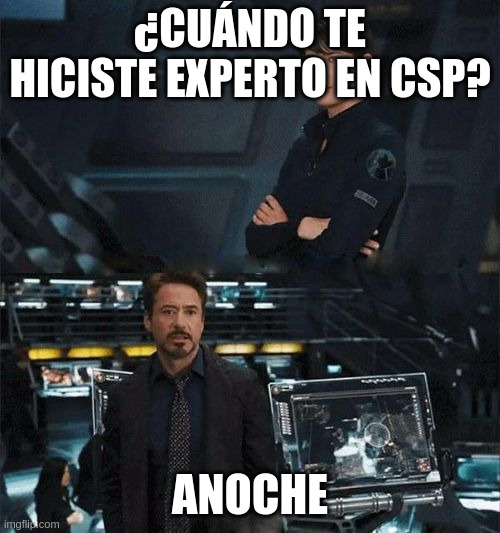

Content Security Policy
¿El fin de XSS?
Santos Gallegos
-
stsewd@proton.me
@stsewd
NO
Si la política es lo suficientemente restrictiva, será difícil pero no imposible llevar a cabo un ataque XSS.
Inyectar HTML sin ejecutar JS puede tener impacto en la seguridad de la página,
y es algo que CSP no puede prevenir.
No, pero si la política es lo suficientemente restrictiva,
será muy difícil (tal vez imposible) llevar a cabo un ataque XSS.
Pero aún así, existen varios bypasses que pueden ser explotados.
Usualmente cuando existe una vulnerabilidad XSS,
es debido a que un atacante puede inyectar código HTML en el sitio,
y eso aún tiene impacto en la seguridad de la página, y no es algo que CSP pueda prevenir
(aún).
Si no entendieron nada de lo que dije, no se preocupen, vamos
a ver más en detalle por qué he llegado a esta conclusión.
$ WHOAMI
Hola, soy Santos Gallegos, soy desarrollador web, y hacker ético.
Contribuyo activamente a proyectos open source,
y he reportado vulnerabilidades en varios proyectos dentro y fuera de mi trabajo,
como Neovim, GitPython, django-allauth, Read the Docs, Sentry, y un montón más.
Principalmente trabajo con Python y Rust.
Actualmente trabajo en Read the Docs, soy core developer.
De vez en cuando también hago bug bounty.
Me pueden encontrar en Internet como @stsewd.
"Experto" en CSP y XSS

Ok, ya les conté un poco sobre mi, y parece que sé algo de seguridad web.
Pero qué me hace un "experto" en CSP y XSS?
Pues me puse a investigar anoche mientras preparaba esta charla.
Mi experiencia con CSP
Había escuchado sobre CSP
En el trabajo me tocó iniciar la implementación de CSP
Bug bounty: XSS en una web con CSP usando nonces. No pude ejecutar JS, pero pude demostrar impacto
Bug bounty: XSS en una web con CSP, muy restrictiva pero sin nonces. Puede hacer un bypass y ejeuctar JS
Esta charla
No, mi experiencia con CSP es algo así.
Había escuchado sobre CSP, tenía una idea muy básica de lo que era, y cómo funcionaba.
Luego en el trabajo me tocó iniciar la implementación de CSP en nuestra web, en modo report-only, por ahora.
Para ello tuve que investigar más sobre CSP, y los errores y bypasses más comunes.
Y coincidentemente, unas semanas después, encontré un stored XSS en un web de un programa de bug bounty.
Resulta que la web tenía una política muy restrictiva y usaban un nonce,
luego de varios intentos, no pude encontrar un bypass para ejecutar JS,
pero pude demostrar una manera de robar credenciales usando inyectando HTML sin ejecutar JS.
Unas semanas después, encontré otro XSS en una web de un programa de bug bounty.
La web tenía una política muy restrictiva, pero no usaban nonces,
así que decidí investigar un poco más, y pude bypassar la política y ejecutar JS
con la ayuda de otra vulnerabilidad que encontré en la web.
Y por supuesto, tuve que investigar más sobre CSP para preparar esta charla.
Así que no, no soy un experto, espero que al menos la mitad de lo que diga sea verdad.
Pero si he tenido experiencia directa con CSP y XSS.
Al final les voy a dejar links a recursos que me ayudaron a entender mejor el tema.
¿Qué es CSP?
Content-Security-Policy
Es una capa de seguridad adicional que ayuda a detectar y mitigar ciertos tipos de ataques,
incluyendo Cross Site Scripting (XSS) y ataques de inyección de datos.
https://developer.mozilla.org/en-US/docs/Web/HTTP/CSP
Les he estado mencionando cosas como CSP, XSS, nonces,
y tal vez se estén preguntando qué diablos estoy diciendo.
Content security policy, o CSP, es una capa de seguridad adicional que ayuda a detectar y mitigar ciertos tipos de ataques,
incluyendo Cross Site Scripting (XSS) y ataques de inyección de datos.
¿Cómo funciona CSP?
Mediante el header Content-Security-Policy que el servidor envía en la respuesta HTTP,
este header contiene una serie de reglas que le indican al navegador qué recursos puede cargar y ejecutar en la página web.
Esto se hace mediante el header Content-Security-Policy que el servidor envía en la respuesta HTTP,
este header contiene una serie de reglas que le indican al navegador qué recursos puede cargar y ejecutar en la página web.
Sintaxis
Content-Security-Policy: <directive> <value>; <directive>
La sintaxis de CSP es la siguiente,
tenemos el header Content-Security-Policy, seguido de una serie de directivas y valores.
Cada directiva está separada por un punto y coma, y cada directiva puede tener uno o más valores separados por un espacio.
o puede no tener valores.
Sintaxis
Content-Security-Policy:
default-src 'self' example.com *.example.com;
upgrade-insecure-requests;
Aquí tenemos un ejemplo de una política CSP,
ahí vemos la directiva default-src,
con varios valores, y luego la directiva upgrade-insecure-requests,
la cual no tiene valores.
El ejemplo está separado en varias líneas para que sea más fácil de leer,
pero en la práctica, todo va en una sola línea.
Directivas
Fetch directives: qué recursos se pueden cargar (scripts, imágenes, etc)
Document directives: aspectos de un documento (HTML)
Navigation directives: orígenes a los que un usuario puede navegar o enviar formularios
Reporting directives: a dónde se envían los reportes de violaciones de CSP
Las directivas de CSP se dividen en varias categorías,
Fetch directives, que controlan qué recursos se pueden cargar, como scripts, imágenes, CSS, qué APIs pueden ser usadas.
Document directives, controlan aspectos de un documento HTML.
Navigation directives, que controlan a qué orígenes un usuario puede navegar o enviar formularios.
Y Reporting directives, que controlan a dónde se envían los reportes de violaciones de CSP.
Previniendo ataques XSS
Lista de hosts, protocolos, y paths permitidos
Nonce y hashes
Previniendo ataques XSS
No usar JavaScript
Content-Security-Policy: script-src 'none'
CSP en acción
Una triste historia
Tenemos una web que lleva varios años en producción, sin un mantenimiento constante,
y con un montón de código JavaScript inline.
Imaginemos que tenemos una web que ya lleva varios años en producción, y sin un mantenimiento constante,
y tiene un montón de código JavaScript inline.
La política (im)perfecta
Content-Security-Policy:
script-src
'self'
'unsafe-inline'
https://*.google.com
https://*.gstatic.com
https://ajax.googleapis.com/ajax/libs/angularjs/1.8.2/angular.min.js
'unsafe-eval'
Inline JS
<script>
alert(document.domain)
</script>
Ejemplo de bloque de código
Código de ejemplo
print("Hola mundo")
Frase para terminar la charla
subtitulo de la frase
Referencias y recursos adicionales
Ahí les dejo el enlace a esta presentación y a mi blog donde a veces escribo cosas. y también estan las vulnerabilidades
Eso fue todo por hoy, espero hayan aprendido algo nuevo. Ahora vamos a las
preguntas. Si algo no se entendió, es probablemente mi culpa, no lo expliqué
bien, así que siéntanse libres de preguntar algo incluso si ya lo
di en la presentación, y lo voy a tratar de aclarar.
En mi blog también pueden encontrar una lista de las vulnerabilidades
públicas que reportado, podemos hablar sobre eso más luego si desean.